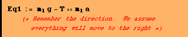
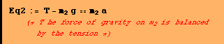

Question #7
Find the tensions and the time for the masses to move 150cm starting from rest.
To solve this we need only calculate the acceleration (the tension we get for free)


![[Graphics:../Images/index_gr_60.gif]](../Images/index_gr_60.gif)
![[Graphics:../Images/index_gr_65.gif]](../Images/index_gr_65.gif)